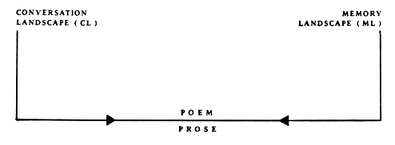

I love sentences and I believe that comes out of my obsession with conversations and my desire to understand them. I can't help but remember what people have said to me and I find myself trying to figure out why they said what they did, without allowing myself to invent. When my prose poems are more internal they still seem to be based on a conversation-one I am having with myself--an exchange which is very tiring until one side, at least, is stated clearly. Why I am unable to express myself in the broken lines of poetry is something about which I can only theorize. I feel an urgency to make sense. It is the urgency (not the sensibleness) that demands prose. I may be too impatient for that unpunctuated pause at the end of a line.

Kilarney Clary
SUPPOSING IT DIDN'T, excerpts
The wind stopped for a moment at the end of autumn and twilight; a woman called across the yards to her young son, toward the bluing trees, tired faces of workers who glimpsed the moon beginning. Some things are only bright in the darkness. Some people never have their time. They feel like certain birds and fish designed especially to go through.
Early, we heard new birds in the weightless darkness, a velvet envelope, we lost sense of the words of fingers and lashes. The birds we called villagers, accidents, birds.
I liked curtains and eucalyptus. Lights in the rain. But skin and hair in their ceaseless adjustments become green hills, a warm ocean, complete, round horizon. I floated the way a heart floats in a body, the way life is buoyed by the blood without difficulty or rest; played with slight motion, once with the hand of a doll or toys I pulled near to me in fever, now the underside of your arm where the flesh is thin and hot, stems, watered silk, polished bannister. It isn't all of love but beauty.
The marvel of glass and water. Siren, storm, footstep. Music and pictures. How all things change inside a person, settle and ride.
She was sick and we had gone ahead of her through the gardens and attics, resting here in a cool grotto. She couldn't have died, we reasoned, because she would have had to pass us. We had gone ahead and left her in an easy chair--her clothing, unfastened, elastic braces around her stomach. Then we must have looked back through the arbor and the rooms over the garage.
I was alone when I found her. She was still my sister but happier and she looked like someone else. I believed her but knew my mother wouldn't. And I forgave her anything; she was only responsible to stay giddy and senseless. No one should worry about her again.
•
Sacrificed so that I could be uncertain, the dead were not me. It was the end of the suburbs, Vietnam. Sprinklers on the lawn, sunlight in large rooms with wooden floors, the anxiety of having things "just-so"--that sweet package was finally opened. But my dreams will not punish me enough, nor can I blame Calley who thought if he could kill them all, he could go home. I think it's good to want to go home.
The scare leaks now into little, patient countries where the U.S. chases ghosts, where heroes fight and heroes refuse. I can't imagine the pain; I cannot feel the United States of America. I know I lost the war but to what does knowledge bring me? An open field with no trail and cries for help from all directions? If bad is only sickness and the wrong are just misunderstood, it was a war to sap the Big Fear and there will be no answer. Like being awake all the time.
BY ME, BY ANY, CAN AND CAN'T BE DONE, excerpts
Someone else. And the empty time, now, in all I gather and promise. I think I can stop losing by a conversation I will have. I cross my fingers to break a habit. Where did I get those lavender sachets; where is Helen now.
The light and time move through the day together; I clear them from all the things around me until the receding and the coming-up are mine. They re-form as annoyances. Where did I put that. When was the last day.
Across the cold beach, Helen and I walked toward the rocks. Up to see the sunrise. It would be light for hours before we saw the sun itself come over the cliffs. But it was too early to talk about anything. Neither of us would have been there alone. Back in the city, Helen walked from her house to mine in the summer and when I opened the door she didn't seem relieved. She wouldn't drink any water. She would stay for only a few minutes. Tired and hot. Sweat and the powdery dust from the streets and dull leaves--on her pale, fat arms and legs, on her damp shift.
It wasn't Helen but the things that seemed to become bored with me. The way her skin and hair were things. So I remember all that in the worst times. When I'm surrounded and have no fear and no regard, across years of waiting I draw my rehearsed exchange. Would you undermine it, Helen, for the best for now.
•
When my heart asked for a way free, it was led into this lightless room. In the back-neighbor's kitchen window a woman stands at the sinkboard eating eggs quickly. 11 o'clock night cat and traffic. Bamboo leaves and wind between here and a next place. It could be lonely. Cold business suits of tired men after airplanes from San Francisco mostly. Something for them to eat too and fewer stars. Awful lights, corridors, ugly ceilings. Gloom, spirited in comfort hills. Dark-shoed children in a playground. A smooth-faced dull girl with her blue dress dreams on something near the fence--stained patch of sand from last night's rain. Good friends talk about thunder. A letter to the corner leisure in an almost warm afternoon passing people as if it was Sunday. Then it's all memories. I could do something for you. You wouldn't know; you would feel better and I'd stay quiet as if it were fair.
Killarney Clary's first collection of poems,
By
Me, By Any, Can and Can't Be Done
(from which the works on this page are re-printed) is still available from Greenhouse Review Press, 3965 Bonny Doon, Santa Cruz, CA 95060. Other work has appeared in
Paris Review, LA Weekly, and APR.